Portfolio Website
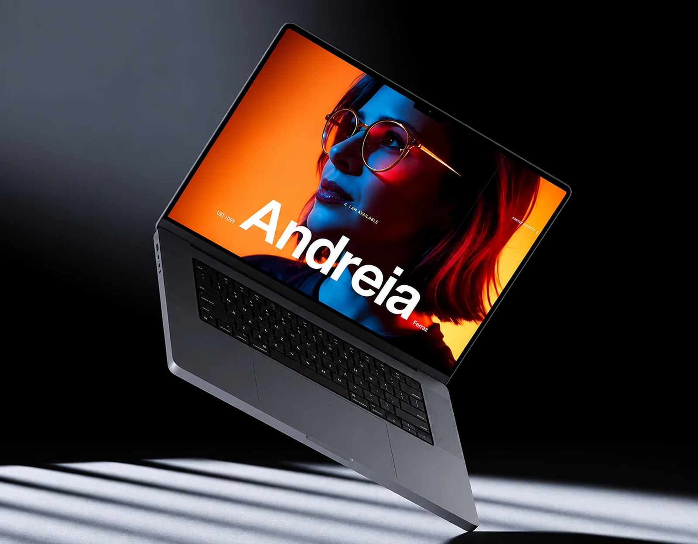
Tools used in this project
- Figma
- Webflow

- ChatGPT
- Claude
- Adobe Firefly
- Magnific (Freepik)
- Lovable
- Codex
- MCP

Move faster without giving up design judgment.
I rebuilt my portfolio as both a design project and an experiment in how AI could become a practical part of my creative workflow.
I connected research, content, design, prototyping, imagery, and development into one process.
Building the portfolio while rethinking the process
I needed one cohesive portfolio for work spanning brand systems, integrated campaigns, presentations, social content, and healthcare communications—and I needed it ready for my job search without months of manual production.
That raised a bigger question: how could I use AI to move faster while keeping ownership of the creative direction and every design decision?
Defining the experience before building it with Figma and Webflow
I started in Figma, prototyping page layouts and exploring hierarchy, navigation, and ways to present different types of work.
I first tried moving content into Webflow through a Figma plugin. As the project developed, I chose to customize a Webflow template, adapting its foundation to the visual direction I was building.
The Figma explorations gave me a reference for typography, spacing, imagery, and the structure of each case study.
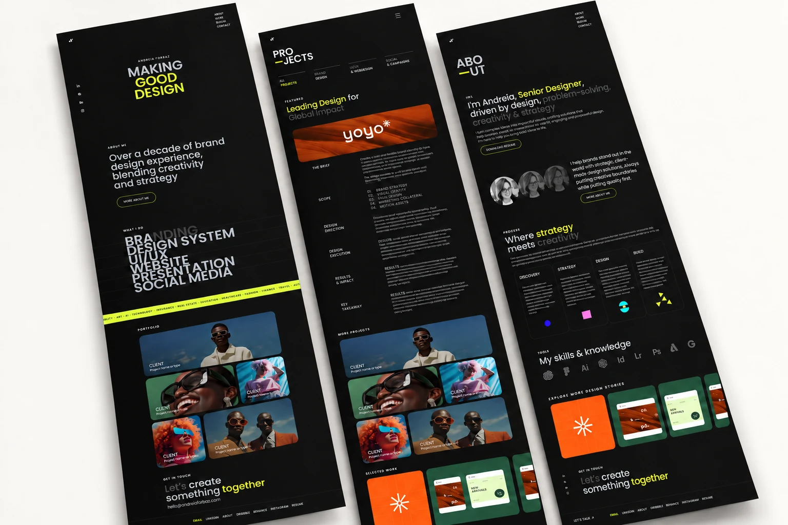
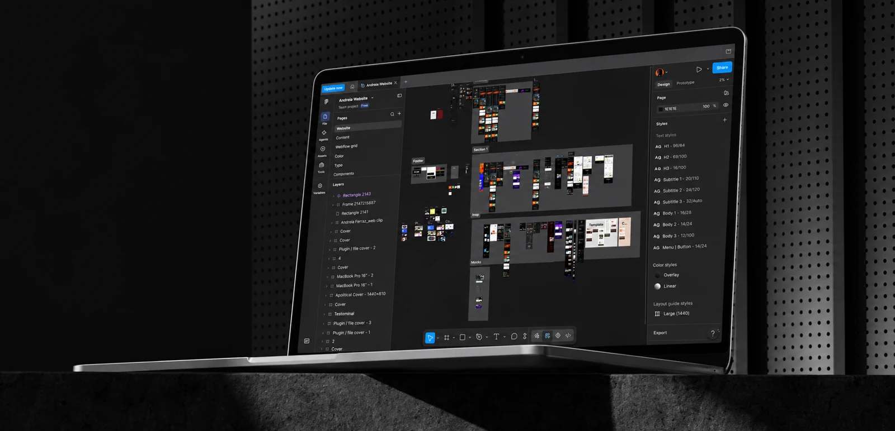
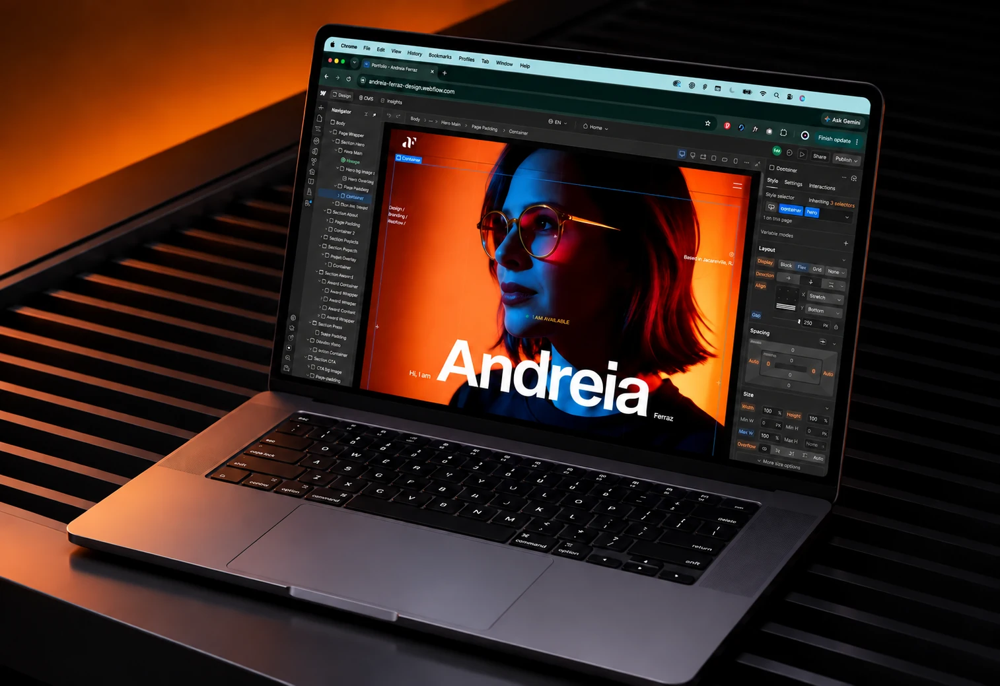
Using Claude and ChatGPT AI to make the story clearer
Alongside the design work, I used Claude and ChatGPT to organize project information, structure case studies, and refine the copy.
The writing evolved with the layouts. I kept deciding what mattered, editing the language, and making sure each case communicated the thinking behind the work.
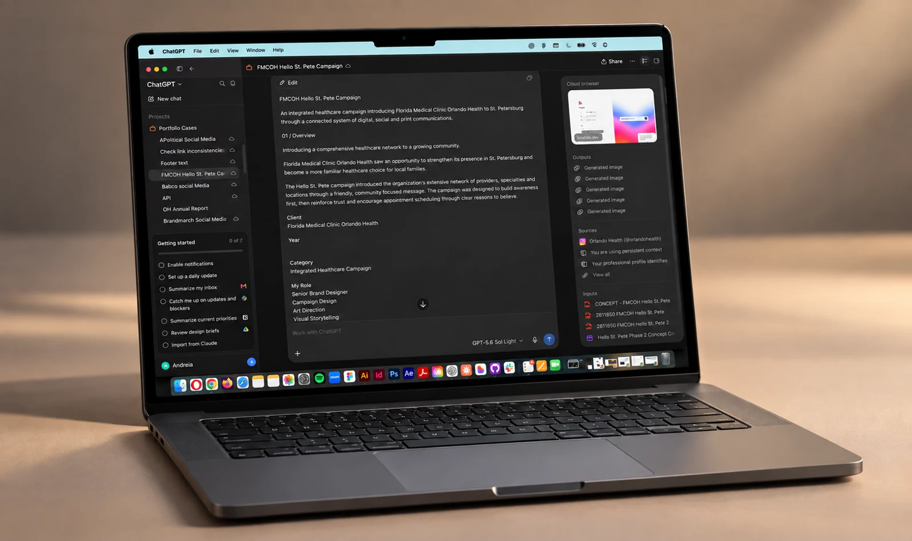
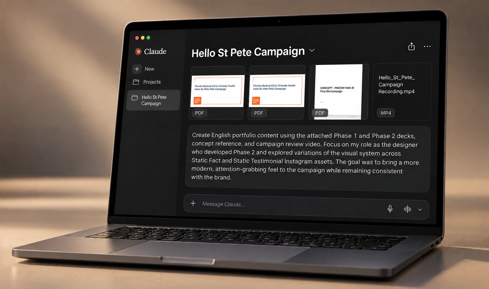
Exploring what the layout could become with Lovable
I used Lovable as a space to test how the portfolio could look and behave in the browser.
These experiments opened up visual possibilities: different compositions, content relationships, and ways to guide the reader. I brought useful ideas back into the design as the site evolved.
Creating imagery with a consistent direction with Firefly, Magnific and ChatGPT
While I explored layouts and refined the content, I worked on the imagery in Adobe Firefly, using Magnific (Freepik) to explore and refine image variations.
I tested visual directions, selected outputs, and refined the image treatments so they belonged to the same visual world. I also used ChatGPT to create mockups that place the layouts and process in context, then selected and refined them to support each case study. Art direction connected these assets to the portfolio’s overall identity.
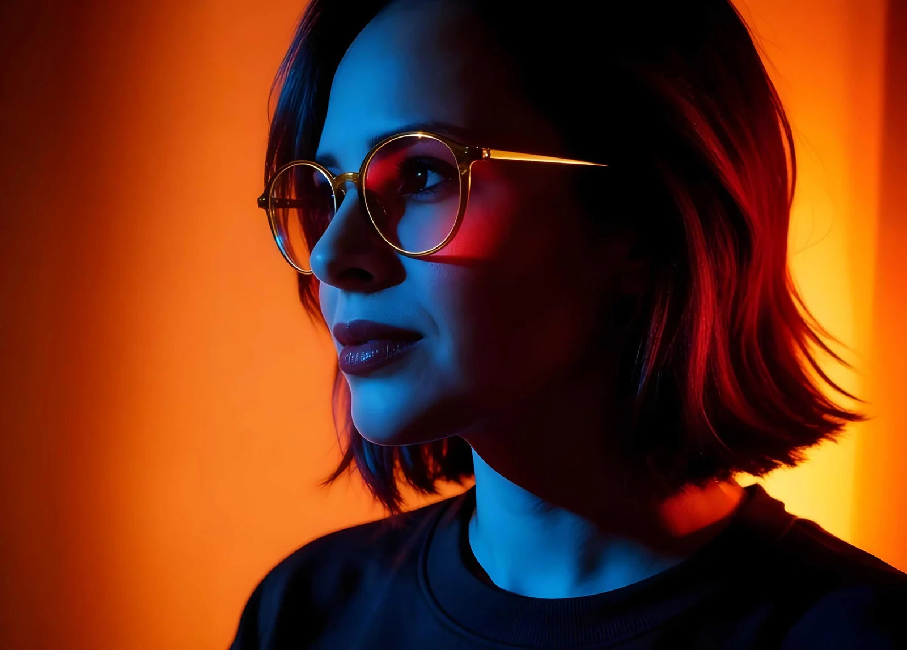
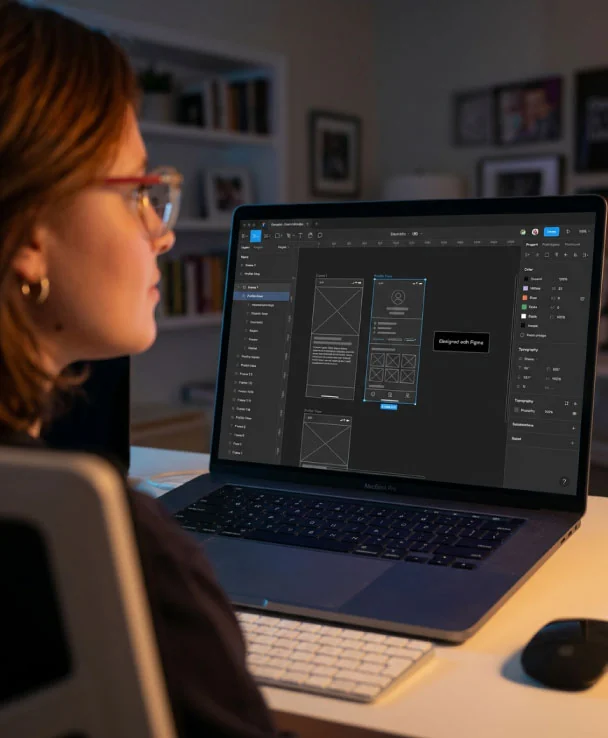
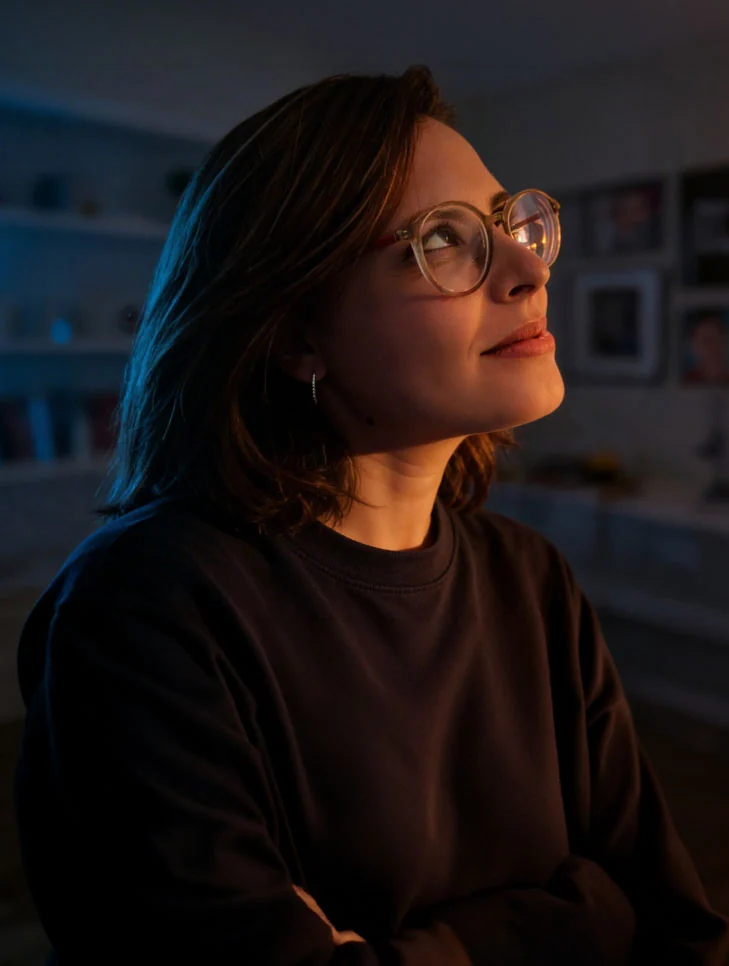
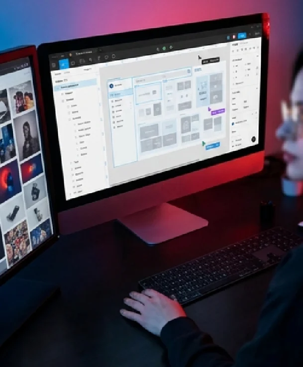
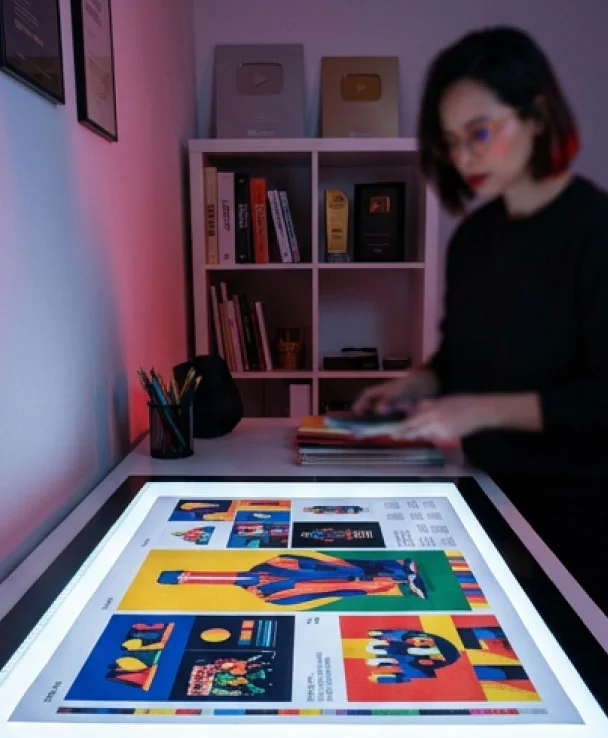
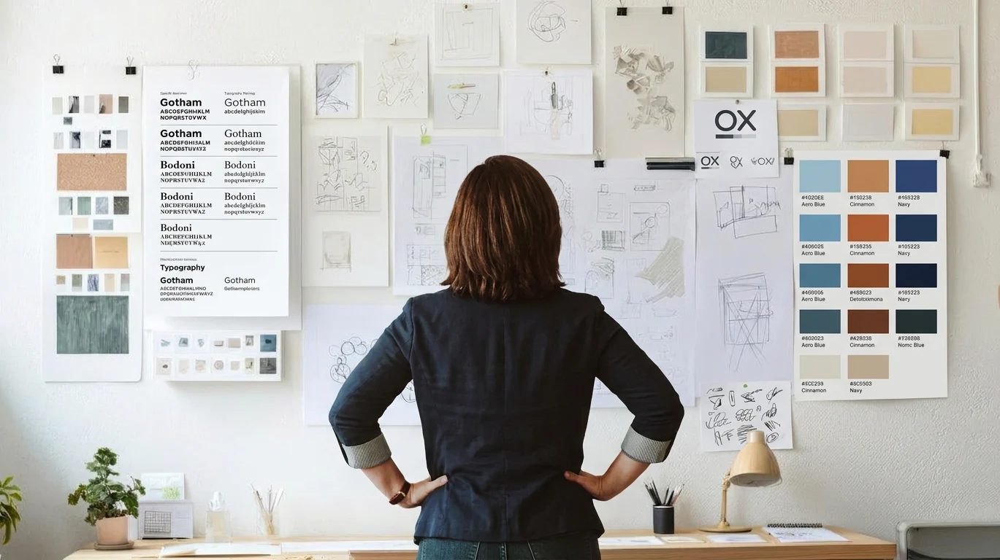
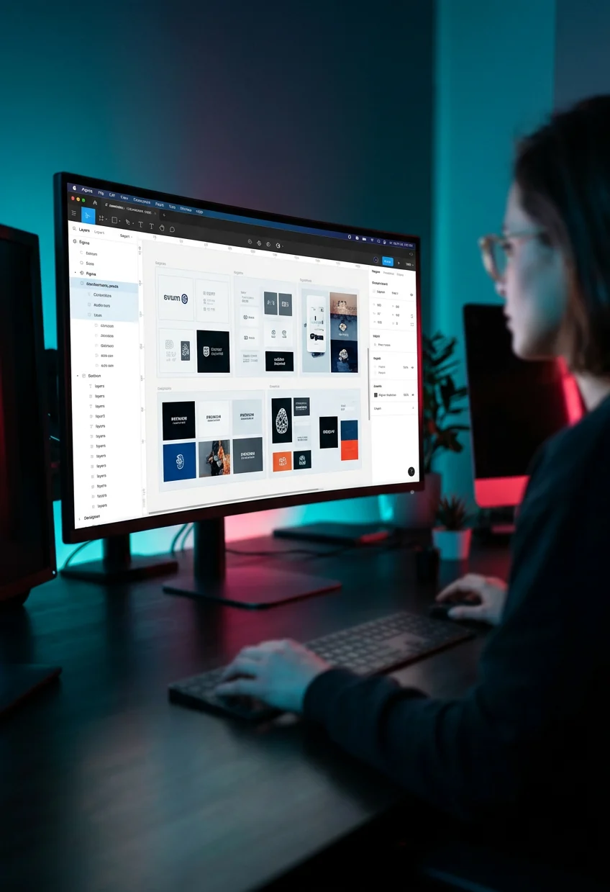
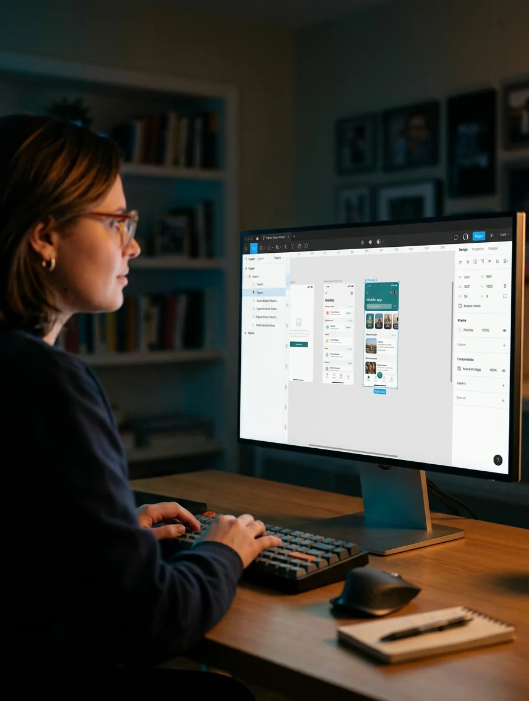
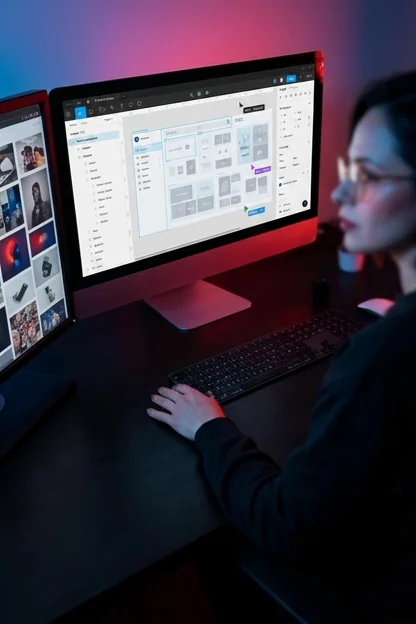
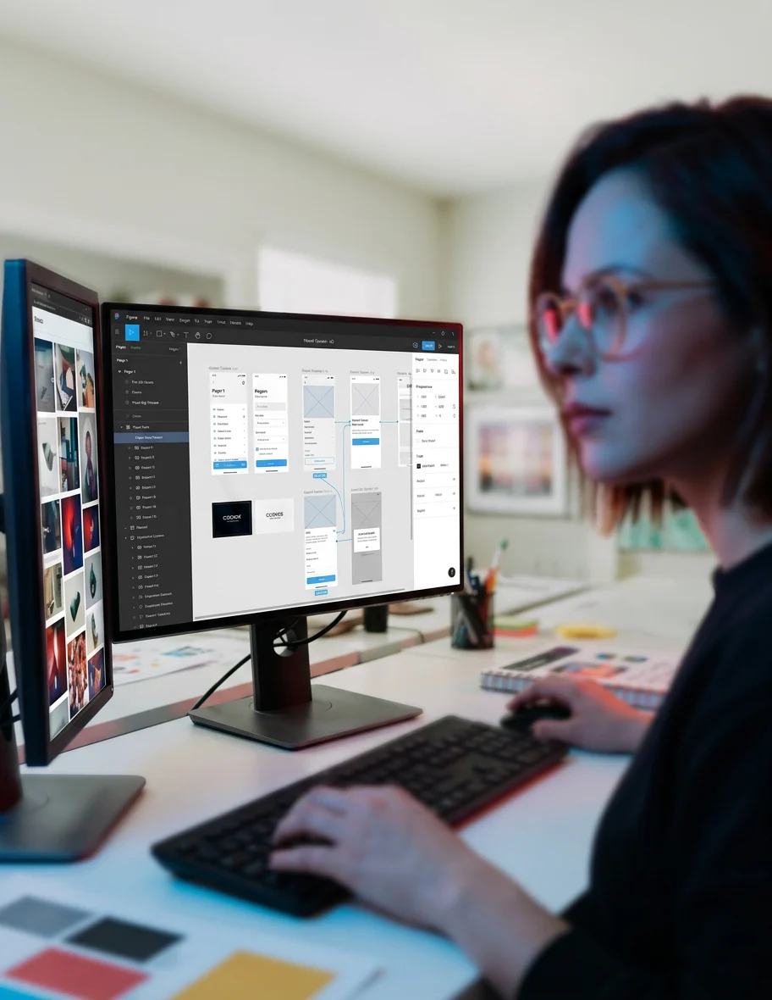
Bringing the pages together with Codex
With the direction established, I used Codex to create the portfolio pages and maintain visual consistency across the site.
Together, we refined typography, alignment, spacing, and cover-image presentation; added light and dark modes and a back-to-top control; and adjusted layouts for desktop and mobile.
I also used Codex to refine video file sizes and how videos display across platforms and screen sizes. Each iteration brought the working site closer to the intended experience.
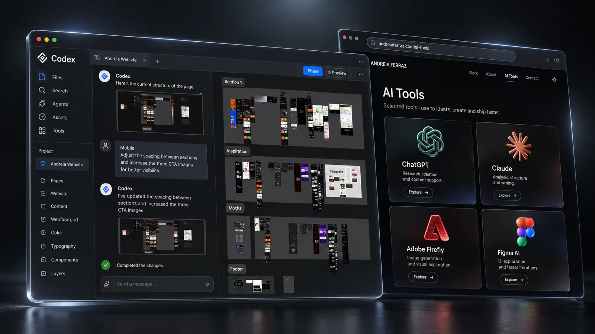
A connected process, not a fixed sequence
The work moved back and forth between layouts, copy, imagery, and implementation. These activities informed one another rather than following a single handoff sequence.
MCP (Model Context Protocol) helped carry design and project context between connected tools, so I could revisit an idea, refine a decision, and keep the implementation aligned with the evolving direction.
The initial Figma-to-Webflow transfer led to template customization. Copy, layout experiments, and imagery developed in parallel and informed the pages refined in Codex. Dashed connections show shared context, not a fixed sequence.
Figma
Initial layouts & prototypes
Lovable
Layout experiments & ideas
Webflow
Plugin transfer → template customization
Claude + ChatGPT
Copy, case structure & mockups
Shared context
MCP · Figma, Lovable & Codex
Adobe Firefly + Magnific
Image exploration, enhancement & art direction
Codex
Pages, consistency, responsive layouts & video refinement
One framework, different stories.
The portfolio became a small design system: a shared framework that creates consistency while giving every project room to tell its own story.
- Typography & hierarchy
- A shared type scale and consistent weights establish a clear reading order across every case.
- Project introductions
- A common structure introduces the project, its context, my role, and the tools used.
- Case study storytelling
- Repeatable sections connect the challenge, design decisions, process, and outcome.
- Image presentation
- Consistent image framing gives each project room to express its own visual identity.
- Content width & spacing
- Shared reading widths, alignment, and spacing create a cohesive rhythm across pages.
- Navigation
- Consistent menus, related projects, and back-to-top controls support exploration.
- Responsive behavior
- Layouts, imagery, and video adapt to desktop and mobile screens.
- Light & dark modes
- The same hierarchy and visual language carry through both viewing modes.
Keeping design judgment at the center
AI allowed me to explore faster, but speed was never the final measure of success. Every output still required a design decision.
What should the viewer see first? Is the hierarchy clear? Does this interaction improve the experience? Does the imagery belong to the same visual world?
Does the case study communicate the actual value of the work? Is the experience consistent across the site?
AI helped me get to those decisions faster. It did not make them for me.
A portfolio and a new way of working
The result is a portfolio that brings different types of work into one coherent experience, supported by a more connected way of working.
Figma shaped the initial explorations. Webflow provided the template foundation. Claude and ChatGPT supported the copy, Lovable opened up layout ideas, and Firefly supported image making. Codex helped build and refine the pages, with MCP carrying context where tools connected.